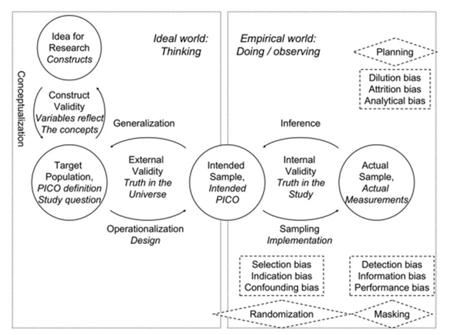
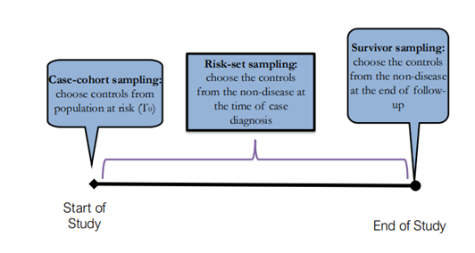
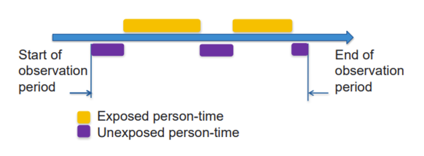

Midterm review
- Bias
Suppose the true population:
| Cases | Controls | Total | |
|---|---|---|---|
| Exposed | 30 | 70 | 100 |
| Unexposed | 20 | 80 | 100 |
Observed population:
| Cases | Controls | Total | |
|---|---|---|---|
| Exposed | 30 | 20 | 50 |
| Unexposed | 20 | 80 | 100 |
Q1: What is this bias called? If the true population is unknown but the selection probabilities are known, how can this bias be corrected?
A: selection bias.
| Selection probabilities | Cases | Controls | |
|---|---|---|---|
| Exposed | \(S_{A,1}\) | \(S_{B,1}\) | |
| Unexposed | \(S_{A,0}\) | \(S_{B,0}\) |
TRUE \(OR = \hat{OR}/\frac{S_{A,1}S_{B,0}}{S_{A,0}S_{B,1}}\)
where selection odds ratio = \(\frac{S_{A,1}S_{B,0}}{S_{A,0}S_{B,1}}\)
To cause selection bias, selection should depend jointly on the exposure and outcome.
The following scenarios do not cause bias:
If selection depends only on exposure
If selection depends only on outcome
If selection depends proportionally on both (independently) \(\rightarrow P(selected|exposure,outcome)=f(exposure) \times g(outcome)\)
Suppose the true population:
| True Smoking | Lung Cancer | No Lung Cancer | Total |
|---|---|---|---|
| Smoker | 40 | 60 | 100 |
| Non-Smoker | 10 | 90 | 100 |
Q2: If 20% of smokers are misclassified as non-smokers, what is the observed odds ratio between smoking and lung cancer? What is this bias called?
| Observed Smoking | Lung Cancer | No Lung Cancer | Total |
|---|---|---|---|
| Smoker | 40-40*0.2=32 | 60-60*0.2=48 | 80 |
| Non-Smoker | 10+40*0.2=18 | 90+60*0.2=102 | 120 |
A: The observed odds ratio is (32*102)/(48*18)=3.78. This bias is called non-differential misclassification of a binary exposure.
Q3: Non-differential misclassification always biased the estimate toward the null. Is that correct?
A: FALSE
Exceptions:
If the exposure has more than two categories
If the exposure is continuous
Outcome misclassification
etc. (Please see the Journal Club)
Q4: In a prospective study comparing myocardial infarction mortality between office workers and longshoremen, individuals who self-select into longshoremen are generally fitter, which leads to lower myocardial infarction rates. What type of bias does this introduce?
A: confounding bias from a traditional epidemiological view (not selection bias)
The difference is that, in confounding, individuals self-select into exposure groups, whereas in selection bias, the researcher’s process of selecting participants into the study creates the bias.
Traditional view is cohort studies don’t have selection bias at entry even if subjects self-select.
Cohort studies/RCTs can have selection bias at end through differential loss to follow-up.
- Missing data
Q5: One important difference between single imputation and multiple imputation is that the latter can appropriately account for the uncertainty of the imputed values. Another important difference is that the outcome variable should be included in the multiple imputation model. Is that correct?
A: TRUE
It is recommended to include the outcome variable in the imputation model, even if the outcome is not missing, because omitting it can bias regression coefficients. However, imputing outcome is a debatable topic.
- Model building
Q6: If you develop a prediction model, what model performance metrics would you report?
A:
Calibration: Measures how closely the predicted probabilities agree with the observed outcomes (e.g., calibration plot, Hosmer-Lemeshow test).
Discrimination: Measures how well the model distinguishes between individuals with and without the outcome (e.g., AUC/ROC, C-statistic)
We often use optimism-corrected performance metrics through internal validation (e.g., bootstrapping) to account for overfitting.
You may report other metrics as well, such as overall performance (e.g., Brier score) and reclassification metrics (e.g., NRI, IDI)
- Matching
Q7: Where do you select cases and controls in a case-control study? Are there any caveats regarding their sources?
A:
Determine cases and and identify a source from which to draw their cases.
Identify controls from the same source population.The fundamental principle is that controls should be representative of the population from which the cases arose. In other words, they should be selected independently of exposures.
Naturally occurring pairs, such as twins, can violate this principle in matched case-control studies because their inherent relationship introduces correlation beyond what matching accounts for, potentially biasing the results.
Q8: In an individual (pair) case-control study, if you match on age and sex, you do not need to adjust for them in the conditional logistic regression model, even if they are potential confounders. Is that correct?
A: FALSE
Matching is for efficiency gain, not for controlling for confounders. Therefore, conditional logistic regression models should include all potential confounders, even if they are matching factors. (If we use frequency matching, we may use unconditional logistic regression with adjustment for all potential confounders, including matching factors)
In addition, please note that association of age and sex with the outcome as well as interactions between the exposure and these matching factors cannot be estimated in the conditional logistic regression model.
Q9: When the outcome is rare, what does the odds ratio estimated from the following matched design represent?: 1. case-cohort sampling, 2. risk-set sampling, and 3. survivor sampling
Case-cohort sampling: Risk ratio
Risk-set sampling (density-based sampling): Incidence rate ratio
Survivor sampling: Odds ratio
The derivations are shown in the document I shared earlier.

Q10: What is the difference between a case-crossover design and a self-controlled case series?
A: Both are “case-only” designs that use individuals as their own controls to study the effects of transient exposures on acute events.
A case-crossover study is outcome-anchored design, while a self-controlled case series is exposure-anchored design.
In a case-crossover study, researchers focus on a specific event (e.g., heart attack) and look back at the exposure history immediately before the event (the “case” period). They then compare this to the exposure history during an earlier period (the “control” period) for the same individual.
A self-controlled case series, on the other hand, looks at the entire observation period for an individual and divides it into “at-risk” periods (times after a specific exposure) and “control” periods (all other time). It then compares the rate of events during the at-risk periods to the rate of events during the control periods.

- Propensity score analysis
Q11: Propensity score is the probability of receiving treatment given covariates. Therefore, we should include predictors of treatment in the propensity score model. Is that correct?
A: FALSE
The propensity score model should include confounders and predictors of the outcome, but not instrumental variables.
Suppose 30% of the patients received the treatment, and the following table summarizes their potential outcomes.
| Group | \(E(Y^1)\) | \(E(Y^0)\) |
|---|---|---|
| Treatment | 100 | 60 |
| No treatment | 80 | 50 |
Q12: Calculate the following treatment effects: ATE, ATT, and ATU.
A:
ATT: \(100-60=40\)
ATU: \(80-50=30\)
ATE: \(0.3*(100-60)+0.7*(80-50)=12+21=33\)
Based on the following tables,
\(C=0\)
| Treatment | No treatment | |
|---|---|---|
| Event | 10 | 50 |
| No event | 790 | 3150 |
| Total | 800 | 3200 |
\(C=1\)
| Treatment | No treatment | |
|---|---|---|
| Event | 200 | 250 |
| No event | 800 | 750 |
| Total | 1000 | 1000 |
Q13: Is C a confounder or effect modifier? Hand-calculate adjusted risk ratio using propensity score matching (1:1 matching) and inverse probability weighting.
A: C is a confounder because it is associated with both the treatment and the outcome.
Within each stratum of C, the treatment effect (RR = 0.8) is the same (if C is the effect modifier, RR is not the same across strata).
The crude/overall effect (RR = 1.63) is very different from the stratum-specific effects.
Propensity score calculation
\(Pr(Tr=1|C=0)=800/(800+3200)=0.2\)
\(Pr(Tr=1|C=1)=1000/(1000+1000)=0.5\)
- Propensity score matching (1:1 matching)
It is equivalent to taking a random sample of the unexposed group that is equal in size to the exposed group (the risk of the outcome will remain the same as in the original unexposed group), because each exposed individual is matched to one unexposed individual with a similar propensity score (the matched unexposed group is a subset of the original unexposed group, chosen to resemble the exposed group in terms of covariates)
\(C=0\)
| Treatment | No treatment | |
|---|---|---|
| Event | 10 | 800*50/3200=12.5 |
| No event | 790 | 800*(3200-50)/3200=787.5 |
| Total | 800 | 800 |
\(C=1\)
| Treatment | No treatment | |
|---|---|---|
| Event | 200 | 250 |
| No event | 800 | 750 |
| Total | 1000 | 1000 |
\(Overall\)
| Treatment | No treatment | |
|---|---|---|
| Event | 210 | 262.5 |
| No event | 1590 | 1537.5 |
| Total | 1800 | 1800 |
RR: 0.8
- Propensity score weighting
\(C=0\)
| Treatment | No treatment | |
|---|---|---|
| Event | 10*(1/0.2)=50 | 50*(1/0.8)=62.5 |
| No event | 790*(1/0.2)=3950 | 3150*(1/0.8)=3937.5 |
Treatment group weight = \(1/PS=1/0.2=5\)
Non-treatment group weight = \(1/PS=1/(1-0.2)=1.25\)
\(C=1\)
| Treatment | No treatment | |
|---|---|---|
| Event | 200*(1/0.5)=400 | 250*(1/0.5)=500 |
| No event | 800*(1/0.5)=1600 | 750*(1/0.5)=1500 |
Treatment group weight = \(1/PS=1/0.5=2\)
Non-treatment group weight = \(1/PS=1/(1-0.5)=2\)
\(Overall\)
| Treatment | No treatment | |
|---|---|---|
| Event | 450 | 562.5 |
| No event | 5550 | 5437.5 |
| Total | 6000 | 6000 |
RR: 0.8